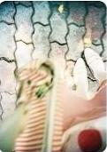
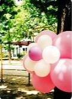
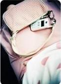
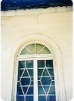
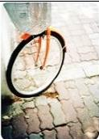

天天编程网
圣诞碎碎念
最近一直情绪不稳，所以我知道自己还不够成熟~
qq签名在23号就换成了“双失圣诞节”，好像百般哀怨似的，其实都是自己的选择。连续两年的索然无味的圣诞，让我开始麻木也开始迟钝了~
在删掉的文章中提过，我充满“明星感觉”的bob头，在洗完头后就变得面目全非，那句“所以打破了我以为的外表好的技术并不会好的错误认知”的话，我要收回！
这一阵在土豆上狂看台湾的综艺节目，或许是因为八卦和肤浅可以让我更直接的快乐~
快到年末，想着要写一些剧的盘点，希望不要因为懒惰而被搁置了~